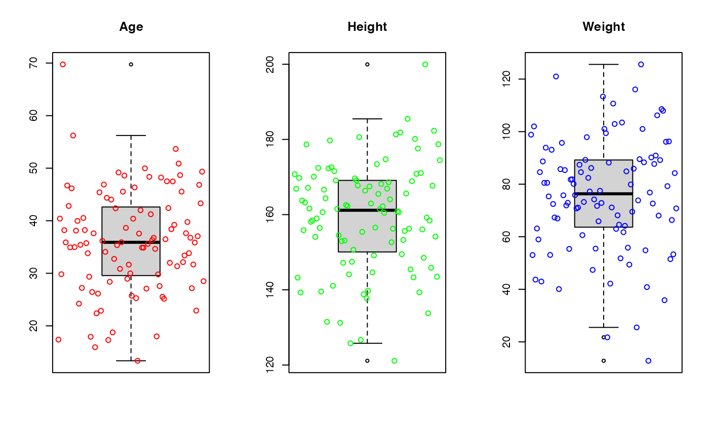

Calculate equally spaced values within a range.
jiggle.RdCalculates a specified number of equally spaced values in a range
Usage
jiggle(n,range=c(-1,1))Details
jiggle is an alternative to the jitter function. Instead of using runif to provide the values, it calls sample and then scales the resulting values to the range specified. This guarantees that the values will be evenly spaced.
Examples
ahw.df<-data.frame(Age=rnorm(100,35,10),
Height=rnorm(100,160,15),Weight=rnorm(100,75,20))
par(mfrow=c(1,3))
boxplot(ahw.df$Age,main="Age")
points(jiggle(100,c(0.5,1.5)),ahw.df$Age,col="red")
boxplot(ahw.df$Height,main="Height")
points(jiggle(100,c(0.5,1.5)),ahw.df$Height,col="green")
boxplot(ahw.df$Weight,main="Weight")
points(jiggle(100,c(0.5,1.5)),ahw.df$Weight,col="blue")
